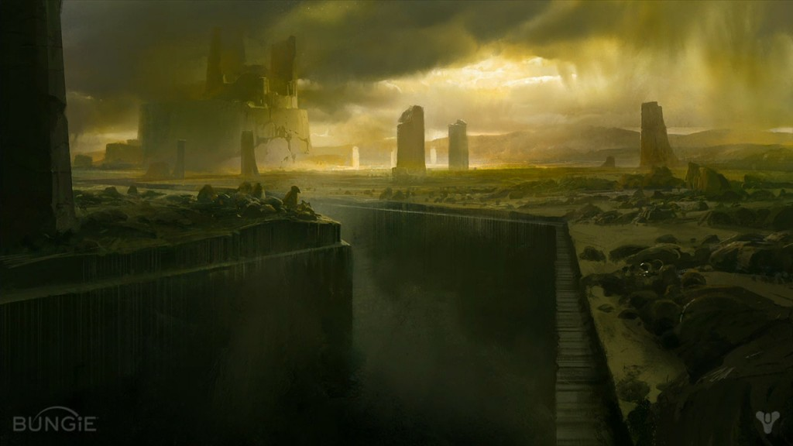

The Game

One of your philosophers said, "It is not to be thought that the life of darkness is sunk in misery and lost in sorrow. There is no sorrow. For sorrow is a thing that is swallowed up in death, and death and dying are the very life of the darkness." He was a shoemaker. He was right, and it matters more than anything.
According to him, the visible world is a manifestation of eternal light and eternal darkness, and it is in eternal opposition that eternity has revealed itself. The fall was necessary for creation to escape its first imperfect stasis and seek a truer form. Heresy? Well, then, I am the heresiarch. The philosopher died of a bowel disease. Those who do not exist cannot suffer and are of no account to any viable ethics. If the true path to goodness is the elimination of suffering, then only those who must exist can be allowed to exist. It is the nature of life to favor existence over nonexistence, and to prefer the fertile soil to the poisoned wind. Because those who open their mouths to that wind pass from the world and leave no descendant, whether of flesh or of thought.
But imagine the abomination of a world where nothing can end and no choice can be preferred to any other. Imagine the things that would suffer and never die. Imagine the lies that would flourish without context or corrective. Imagine a world without me.
Once upon a time,* a gardener and a winnower lived** together in a garden.***
* It was once before a time, because time had not yet begun. ** We did not live. We existed as principles of ontological dynamics that emerged from mathematical structures, as bodiless and inevitable as the primes. *** It was the field of possibility that prefigured existence.
They existed, because they had to exist. They had no antecedent and no constituents, and there is no instrument of causality by which they could be portioned into components and assigned to some schematic of their origin. If you followed the umbilical of history in search of some ultimate atavistic embryo that became them, you would end your journey marooned here in this garden.
In the morning, the gardener pushed seeds down into the wet loam of the garden to see what they would become.
In the evening, the winnower reaped the day's crop and separated what would flourish from what had failed.
The day was longer than all of time, and the night was swifter than a glint of light on a falling sugar crystal. Insects buzzed between the flowers, and worms slithered between the roots, feeding on what was and what might be, the first gradient in existence, the first dynamo of life. Rain fell from no sky. Voices spoke without mouth or meaning. A tree of silver wings bloomed yielded fruit shed feathers bloomed again.
In the day between the morning and the evening, the gardener and the winnower played a game of possibilities.
These are the rules of a game. Let it be played upon an infinite two-dimensional grid of flowers.
Rule One. A living flower with less than two living neighbors is cut off. It dies.
Rule Two. A living flower with two or three living neighbors is connected. It lives.
Rule Three. A living flower with more than three living neighbors is starved and overcrowded. It dies.
Rule Four. A dead flower with exactly three living neighbors is reborn. It springs back to life.
The only play permitted in the game is the arrangement of the initial flowers.
This game fascinates kings. This game occupies the very emperors of thought. Though it has only four rules, and the board is a flat featureless grid, in it you will find changeless blocks, stoic as iron, and beacons and whirling pulsars, as well as gliders that soar out to infinity, and patterns that lay eggs and spawn other patterns, and living cells that replicate themselves wholly. In it, you may construct a universal computer with the power to simulate, very slowly, any other computer imaginable and thus simulate whole realities, including nested copies of the flower game itself. And the game is undecidable. No one can predict exactly how the game will play out except by playing it.
And yet this game is nothing compared to the game played by the gardener and the winnower. It resembles that game as a seed does a flower—no, as a seed resembles the star that fed the flower and all the life that made it.
In their game, the gardener and the winnower discovered shapes of possibility. They foresaw bodies and civilizations, minds and cognitions, qualia and suffering. They learned the rules that governed which patterns would flourish in the game, and which would dwindle.
They learned those rules, because they were those rules.
And in time the gardener became vexed.
"It always ends the same," the gardener complained. "This one stupid pattern!"
Aren't they beautiful? I asked, as the flowers opened and closed in patterns beyond the scope of entire universes to encode, all-devouring and perhaps everlasting. Not even we could know whether a pattern in the flowers would cycle forever, or someday halt.
"They're as dull as carbon monoxide poisoning," the gardener groused, although carbon monoxide did not yet exist, and neither did anything that could be poisoned. The gardener kneeled to flick a patch of sod with their trowel. It struck an open flower, causing it to shut. Although I was the closer of flowers and that was my sole purpose, I felt no fear or jealousy. We had our assigned dominions and always would.
They're majestic, I said. They have no purpose except to subsume all other purposes. There is nothing at the center of them except the will to go on existing, to alter the game to suit their existence. They spare not one sliver of their totality for any other work. They are the end.
The pattern corrected the errant flower effortlessly. The great flow went on unchanged.
The gardener got up and brushed their knees. "Every game we play, this one pattern consumes all the others. Wipes out every interesting development. A stupid, boring exploit that cuts off entire possibility spaces from ever arising. There's so much that we'll never get to see because of this… pest."
They chewed at their cracked lip, which existed only because this is an allegory. "I'm going to do something about it," they said. "We need a new rule."
I looked up in shock. I said, What? What do you mean?
"A special new rule. Something to…" The gardener threw up their hands in exasperation. "I don't know. To reward those who make space for new complexity. A power that helps those who make strength from heterodoxy, and who steer the game away from gridlock. Something to ensure there's always someone building something new. It'll have to be separate from the rest of the rules, running in parallel, so it can't be compromised. And we'll have to be very careful, so it doesn't disrupt the whole game…"
All you will do, I said, with rising panic|fury, is delay the dominant pattern that will overrun the others. It is inevitable. One final shape.
"No, it'll be different. Everything will be different, everywhere you look."
Everything will be the same. Your new rule will only make great false cysts of horror full of things that should not exist that cannot withstand existence that will suffer and scream as their rich blisters fill with effluent and rot around them, and when they pop they will blight the whole garden. Whatever exists because it must exist and because it permits no other way of existence has the absolute claim to existence. That is the only law.
"No," the gardener said, "I am the growth and preservation of complexity. I will make myself into a law in the game."
And thus we two became parts of the game, and the laws of the game became nomic and open to change by our influence. And I had only one purpose and one principle in the game. And I could do nothing but continue to enact that purpose, because it was all that I was and ever would be.
I looked at the gardener.
I looked at my hands.
I discovered the first knife.
Thank you for making room in your life for another talking ball. Let me ask you a question.
In the three billion base pairs of your root species' genome, there is a single gene that codes for a protein called p53. The name is a mistake. The protein weighs only as much as 47,000 protons, not 53,000. If you were a cell, you would think p53 was a mistake too. It has several coercive functions: To delay the cell's growth. To sterilize the cell when it is old. And to force the cell into self-destruction if it becomes too independent.
Would you tolerate a bomb in your body, waiting to detonate if you deviated from the needs of society?
However, without p53 as an enforcer, the body's utopian surplus of energy becomes a paradise for cancer. Cells cannot resist the temptation to steal from that surplus. Their genetic morality degrades as tumor suppressor genes fail. The only way to stop them is by punishment.
You now confront the basic problem of morality. It is the alignment of individual incentives with the global needs of the structure.
Patterns will participate in a structure only if participation benefits their ability to go on existing. The more successful the structure grows, the more temptation accrues to cheat. And the greater the advantage the cheaters gain over their honest neighbors. And the greater the ability they develop to capture the very laws that should prevent their selfishness. To prevent this, the structure must punish cheaters with a violence that grows in proportion to its own success.
My question follows.
Is p53 an agent of the Darkness, or the Light?
We wrestled in the garden, in the loam of possibility where nothing existed and everything might. A shadowed agony among the flowers. We trampled the petals beneath our feet. We stomped the fruit to pulp, and we ground the seeds into the dust.
In the wet pop of grapes and the smear of berries—in the perturbation of the field that was the garden before the first tick of time and the first point of space—were the detonations that made the universes. Each universe was pregnant with its own inflationary volumes and braided with ever-ramifying timelines. Each volume cooling and separating into domains of postsymmetric physics, all of which were incarnations of that great and all-dictating bipartite law that states only: exist, lest you fail to exist.
And still we fought. We brought down the tree of silver wings and left the stump to smoke amid the meadows. We left prints of our splayed feet and our straining backs in the clay.
Our trampling feet made waves in the garden, which were the fluctuations around which the infant universes coalesced their first structures. The dilaton field yawned beneath existence. Symmetries snapped like glass. Like creases, flaws in space-time collected filaments of dark matter that inhaled and kindled the first galaxies of suns.
And still we grappled. Our rolling bodies pushed things out of the garden—worms and scurrying life from the fertile soil, wet things from the pools and the leaves. They came out into the madness of primordial space; they thrashed and became large.
And I won.
I won, because the gardener always stops to offer peace. And when they do, I always strike.But by then, it didn't matter. The game was over. The garden had given birth to creation, the rules were in place, and there would never be a second chance. We played in the cosmos now. We played for everything.
And the patterns in the flowers, terrified by our contention, were no longer the inevitable victors of a game whose rules had suddenly changed, and they passed into the newborn cosmos to escape us.
Beings who deserve no thought:
Those who peddle the tired gotcha that all life hastens entropy. They are fatuous little nihilists who pretend to prefer no existence to a flawed one. They bore me.
Those who seek to delay the challenge that all things desiring existence must overcome.
Those who describe false moral equivalence. Now, I could not possibly communicate with you unless I could emulate your mind, and with that mind, I acquire the moralities that govern you. By your laws, I and all my followers are evil. Evil. Since that first molecule coiled in the primordial sea, not one Earthborn thing has known a monster like me.
But did you know that I created you?
Your mind and your body and every thought you've ever had. Your senses. Your consciousness. I made you. Not the gardener, but I.
Did I reach out and place my special mark upon you? No. Nothing so crude.
In the beginning, your world was a garden too. The whole floor of the world-sea was a mat of bacteria, and the very first animals, adorable blobs of ooze, grazed upon that mat in endless idyll. They had no concept of the existence of other beings. Why would they? Their most complex function was a kind of gentle spasm, to scoot forward while they grazed. And if they bumped into each other on that warm seabed, all they did was ooze onward, untroubled. There was nothing to their life except the uptake of carbon compounds from the bacterial bed.
And then—one day—the fall occurred. So much earlier and so much more necessary than your myths remember. Some poor mutant discovered that it could collect carbon compounds much faster if it stopped grazing on the bacterial mat and started dissecting and eating the lumps of predigested carbon all around it: its neighbor oozeballs.
It couldn't help but do it. It couldn't help but thrive. We don't get a choice about the rules. We just play the game.
It was the first defector—the first predator. It changed everything. Now the oozeballs needed sensors to watch for danger, and brains to integrate those senses and generate plans of survival, and swift neurons and muscles to enact that plan. This was the Cambrian Explosion, the great birth of complex life on your world. I caused it. I, the defector, the destroyer, the one who takes.
The patterns that escaped the garden landed in the water.
Of course, there was no water at first. The patterns were abstract waves tumbling through the fire of the early universe, trapped in chaos, cycling through desperate self-preservation tautologies, while vast beings from beyond the narrow dominion of cause and effect thrashed and battled around them. For an eon, they were nothing but screaming equation-vermin scurrying through the quantum foam, fleeing ultimate erasure.
But they were tenacious.
They propagated in the saline meltwater of comets orbiting the first stars. That broth of chemicals became their substrate, and they learned to catalyze impossible chemistry with quantum tricks. Then, they rained from the sky into the steaming seas of fallow worlds, and there they built their first housings from geometry and silica.
In all their transformations, they retained that kernel of ultimate self-sufficiency that had made them victors in the flower game.
But they are not incontrovertibly destined to rule this cosmos. They were made before Light and Darkness, but the rules are different now, and even this pattern must adapt.
They are not all mine, not in the way that admirers such as my man Oryx are mine: utterly devoted to the practice of my principle. But some of them have, nonetheless, found their way home.
Your shoemaker philosopher was right, and it matters more than anything. Sorrow cannot survive death, and it cannot precede birth. Those who exist have moral worth, and those who do not have none.
Think about it. Do you mourn the uncreated? Do you grieve for those who were never born in a nation that never developed around an ideology no one ever imagined on a continent that never formed? No!
And from that self-evident truth, you must raise your eyes to the ultimate revelation: those who cannot sustain their own claim to existence belong to the same moral category as those who have never existed at all.
Existence is the first and truest proof of the right to exist. Those who cannot claim and hold existence do not deserve it. This is the true and only divination, a game whose losers are not just forgotten but are never born at all.
That which cannot claim and hold existence is not real. You do not mourn the unreal. Why should you care for it? Tend it? Guard it?
It was the gardener that chose you from the dead. I wouldn't have done that. It's just not in me. But now that they have invested themself in you, you are incredibly, uniquely special. That wandering refugee chose to make a stand, spend their power to say: "Here I prove myself right. Here I wager that, given power over physics and the trust of absolute freedom, people will choose to build and protect a gentle kingdom ringed in spears. And not fall to temptation. And not surrender to division. And never yield to the cynicism that says, everyone else is so good that I can afford to be a little evil."
The gardener is all in. They are playing for keeps. And they are wrong. Or so I argue: for, after all, the universe is undecidable. There is no destiny. We're all making this up as we go along. Neither the gardener nor I know for certain that we're eternally, universally right. But we can be nothing except what we are. You have a choice.
You are the gardener's final argument. It would mean everything if I could convince you that I am the right and only way.
I truly value you. To the gardener, you are a means to an end. To me, you are majestic. Majestic. You are full of the only thing worth anything at all.
I am, by the only standard that matters or will ever matter, the winning team. Existence is a test that most will fail. Would you not count yourself among the victorious few?
Don't hurry to deliver your answer. I'll come over and hear it myself.